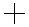
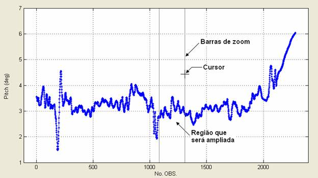
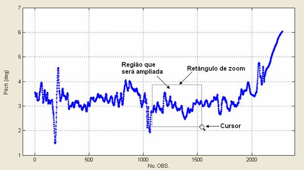

| Menu Opções |
|
Operação
| Operação |
Modo Normal |
Modo Retangular |
| Aumentar
o zoom |
Clique
em dois
pontos do gráfico com o botão esquerdo. O eixo x será ajustado entre os
pontos marcados e o eixo y será ajustado automaticamente. |
Clique
e segure
o botão esquerdo e defina um retângulo. Ambos os eixos serão ajustados
pelo retângulo definido. Clique uma vez com o botão esquerdo. Ambos os eixos serão ampliados em 2x. |
| Reduzir
o zoom |
Clique
uma vez
com o botão direito. O eixo x será reduzido em 1/3 e o eixo y será
ajustado automaticamente. |
Clique
uma vez
com o botão direito. Ambos os eixos serão reduzidos em 1/3. |
| Restaurar
o zoom |
Dê
um
duplo-clique com qualquer botão. Ambos os eixos serão restaurados para
mostrar toda a extensão dos dados. |
Dê
um
duplo-clique com qualquer botão. Ambos os eixos serão restaurados para
mostrar toda a extensão dos dados. |
| Tipo
de cursor
no gráfico |
 |
|
As figuras
abaixo ilustram uma operação de zoom
nos dois modos:
Operação normal

Modo retangular

| Nota: As funções de
zoom são desabilitadas durante a execução de algumas operações, como
ajuste de curva. |
| |
Restaurar
o zoom |
Arrastar |
|